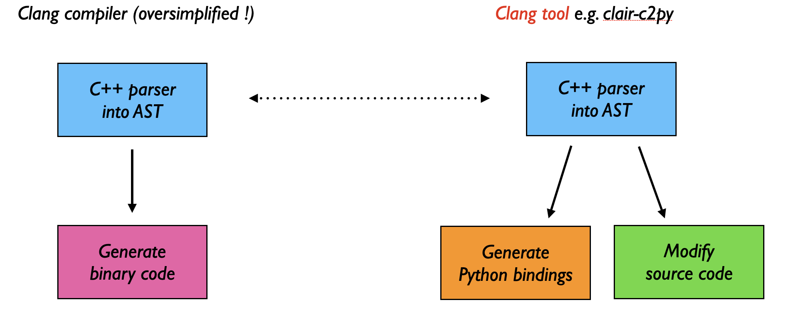

Getting Started
This section will guide you through your first steps with clair/c2py by wrapping a very simple C++ function and compiling it into a Python module.
C++ Code
Let us begin with the following C++ code:
#include <c2py/c2py.hpp>
/** Some documentation
*
* @param x First value
* @param y Second value
* @return The result
*/
int add(int x, int y) { return x + y; }
Here, we define a function called add, which takes two integers, x and y, and returns their sum.
Our goal is to be able to call this function from Python. Before we can to that, we need to
Generate Python Bindings and Compile the Module
In order to call C++ from Python, some binding code has to be generated. This is a piece of C++ code which adapts the C++ functions and classes to the C API of Python.
The clair_c2py tool automatizes this task
by parsing the original C++ code,
getting_started.cppin our case, to build the Abstract Syntax Tree (AST) andby generating the C++/Python bindings from the AST.
It outputs/updates the following files:
getting_started.wrap.cxxcontains the generated bindings (based on c2py) which have to be compiled together with the original C++ code.getting_started.wrap.hxxcontains some additional information (only needed when working with Across multiple modules).getting_started.cppis updated to#includethe filegetting_started.wrap.cxx.
After the bindings have been generated, the only thing left to do is to compile getting_started.cpp into a Python module.
Note
Even though the bindings are readable C++ code, they are designed to be automatically generated, not written by hand. The c2py API is therefore not part of the user documentation.
To actually generate the bindings and compile the module, we can choose between two approaches:
Both of them require clair to be installed.
The former makes it very easy to test small pieces of code. However, it requires an explicit c2py installation and can quickly become tedious for larger projects.
We therefore recommend to use CMake integration whenever possible.
Use the Python Module
Once the Python module has been compiled, we can immediately start using it:
>>> from getting_started import add
>>> add(5, 7)
12
clair-c2py also automatically generates the Python documentation from the C++ code comments,
using the standard numpydoc format.
>>> help(add)
add(...)
Dispatched C++ function(s).
::
[1] (x: int, y: int)
-> int
Some documentation
Parameters
----------
x : int
First value
y : int
Second value
Returns
-------
int
The result
What is a Clang tool?
clair-c2py is a Clang tool: it parses C++ source files using the Clang compiler
and generates Python bindings from the Abstract Syntax Tree (AST).
clang-tidy, clang-format, etc.As a result, clair-c2py can parse the full C++ language, including the latest standards (C++20, C++23).
{kind=link}

A Clang tool reuses the compiler’s parser to analyze or transform C++ code.